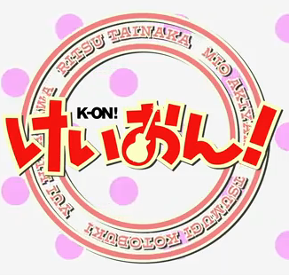

Honey Tea Time

H T T
《放学后TEA TIME》收录了2009年TBS系电视动画《K-ON!》的剧中曲。“放学后TEATIME”是《K-ON!》剧情中第2年的学园祭之前樱丘高校轻音部决定的乐团名称[3]，包括五位主角平泽唯、秋山澪、田井中律、琴吹䌷和中野梓，5人的声优为丰崎爱生、日笠阳子、佐藤聪美、寿美菜子和竹达彩奈。而之前发行的单曲CD《Cagayake!GIRLS》、《Don't say“lazy”》和《ふわふわ時間》则以“樱高轻音部”的名义发行。《K-ON!》爱好者以日本滋贺县犬上郡丰乡町丰乡小学（已废校）校舍三楼会议室呈现《K-ON!》动画版中的《放学后TEATIME》布景此迷你专辑包含动画第8话“新欢！”中出现的《わたしの恋はホッチキス》（我的恋爱是钉书机）、第12话“轻音！”中出现的《ふでペン〜ボールペン〜》（毛笔～圆珠笔～）、《ふわふわ時間（唯）》（轻飘飘时间）和尚未在动画中出现的《カレーのちライス》（咖喱之后是米饭）4首歌曲的录音室版本（Disc-1）和现场Live版本（Disc-2），分别收录于Disc-1（StudioMix）和Disc-2（LiveMix）。动画中将所有原创的剧中曲都标示为“秋山澪作词、琴吹䌷作曲”，而实际上真正负责作曲作词的另有其人。[4]专辑的初回限定盘有豪华外箱包装，还附有单曲CD《ふわふわ時間》的封面照片和全部歌曲的乐谱